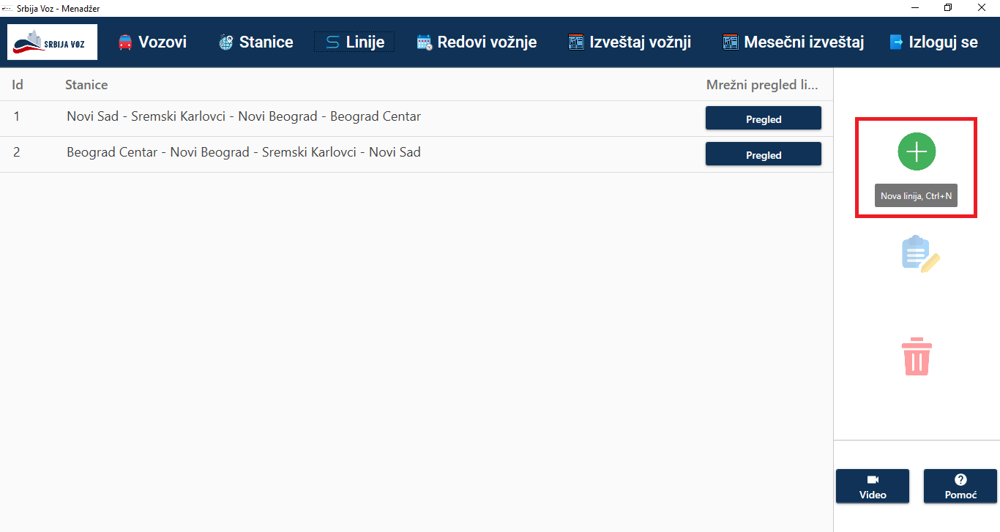
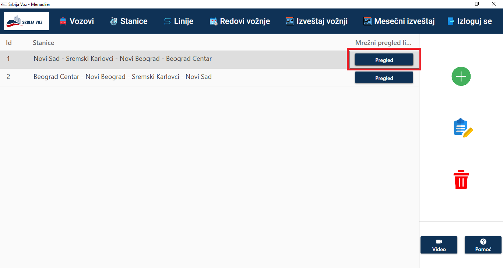
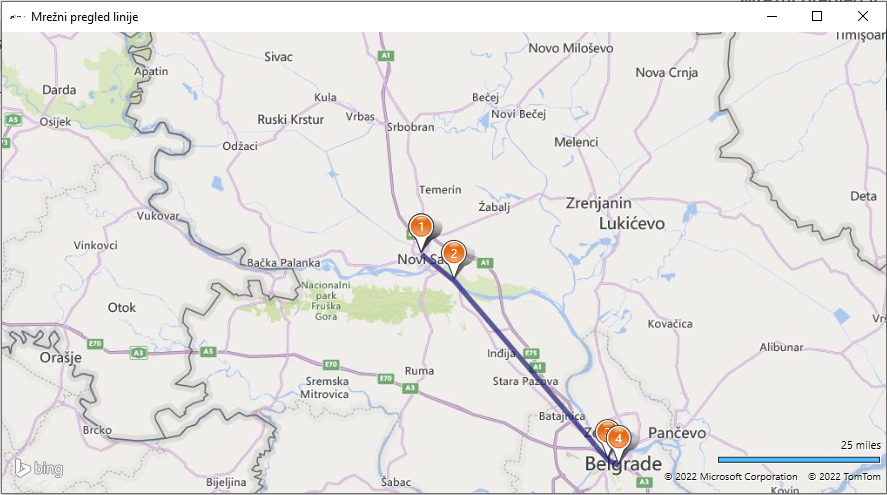
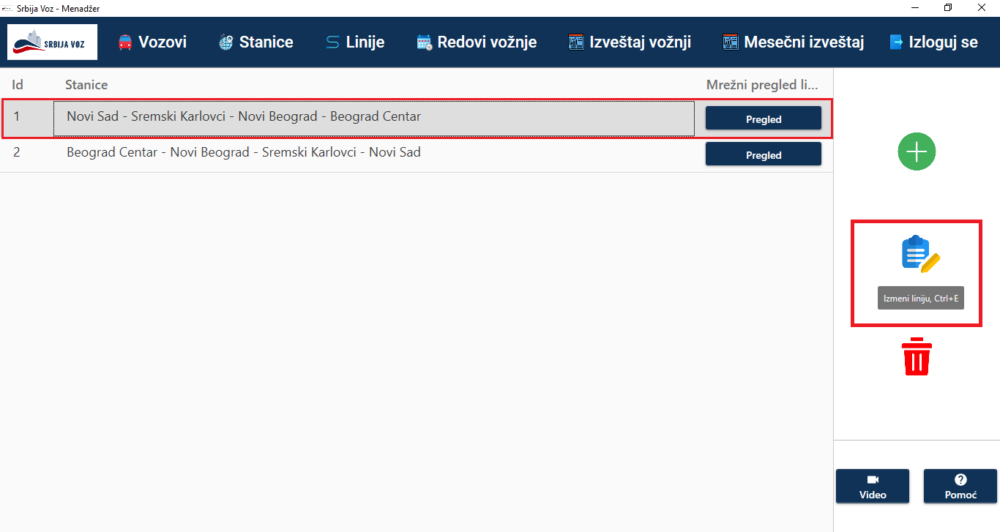
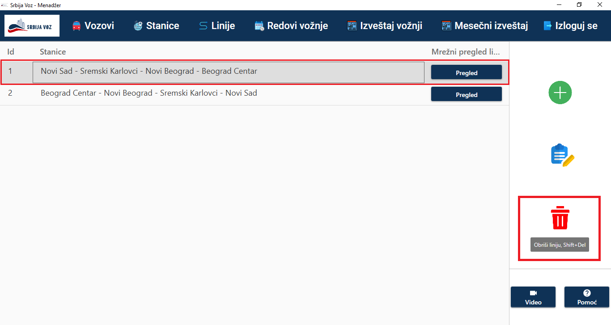
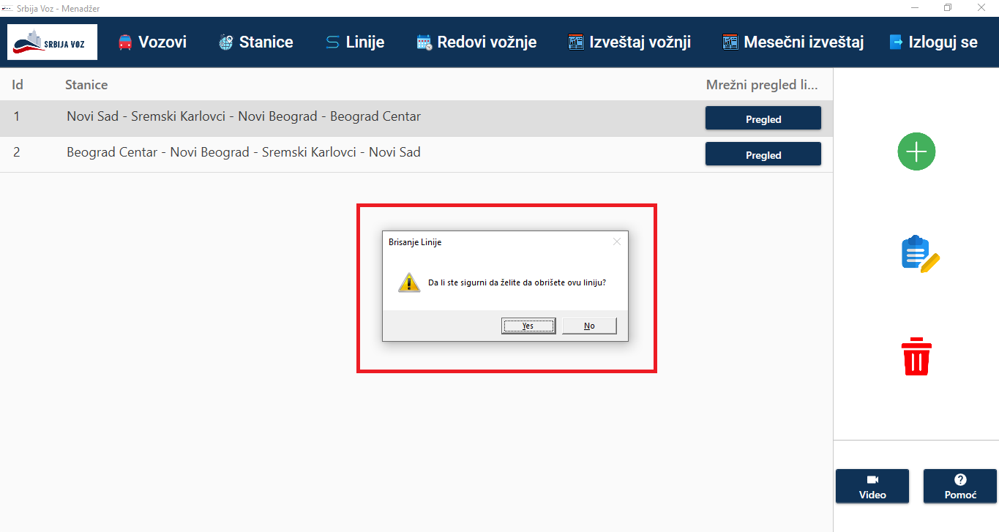

Prvi korak predstavlja odabir opcije "Nova linija" klikom na dugme ili upotrebom određene prečice(Ctrl+N) kao što je zaokruženo na slici ispod.

Nakon toga se otvara prozor za kreiranje nove linije koji sadrži pobrojane sve stanice
sa leve strane. Odabir stanica za liniju je omogućen prevlačenjem odabrane stanice u desnu
kolonu. Pritiskom na dugme "Dodaj", kreira se nova linija u redosledu u kom su stanice poredane u desnoj koloni.
*Napomena: Linija neće biti kreirana ukoliko takva već postoji.
Pritiskom na dugme "Pregled", koje je zaokruženo na slici ispod, otvara se prozor sa kartom koji predstvlja mrežni pregled linije.
Na sledećoj slici je prikazan pomenuti prozor. Sadrži geografsku kartu na kojoj je grafički prikazana odabrana linija. Pinovi (narandžasti krugovi sa brojevima) predstavljaju stanice od prve(1) do poslednje, redom.
Prvi korak je odabir određene linije u tabeli svih dostupnih linija. Zatim klikom na zaokruženo dugme sa desne strane("Izmeni liniju") ili prevlačenjem izabrane linije na pomenuto dugme ili upotrebom određene prečice(Ctrl+E), otvara se prozor koji sadrži podatke o izabranoj liniji.

Prozor je prikazan na sledećoj slici. U desnoj koloni su stanice koje su postavljene za datu
liniju i one se mogu prevlačiti sa jedne na drugu stranu u zavisnosti od toga kako želimo da
izmenimo liniju. Pritiskom na dugme "Sačuvaj" izabrana linija se ažurira.
*Napomena: Linija neće biti ažurirana ukoliko takva već postoji.
Prvi korak je odabir određene linije u tabeli svih dostupnih linija. Zatim klikom na zaokruženo dugme sa desne strane("Obriši liniju") ili prevlačenjem izabrane linije na pomenuto dugme ili upotrebom određene prečice(Shift+Del), otvara se dijalog sa upozorenjem gdje korisnik mora da potvrdi brisanje izabrane linije.
Ukoliko korisnik odluči da odustanete od procesa brisanja linije treba da pritisne opciju "No", a ukoliko izabere opciju "Yes" linija će biti trajno obrisana.
